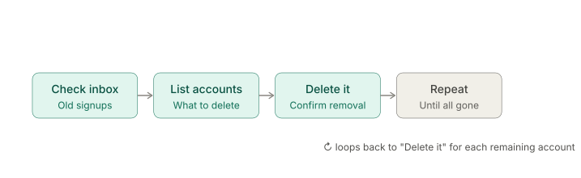

Old accounts from websites and apps that have not been used for a long period of time are more likely to be compromised due to a reliance on old passwords, absence of two-factor authentication, and fewer security updates. (source) If you're like me, you have amassed a hefty digital footprint over the years through account sign-ups. Think Google, shopping, old Reddit accounts, and niche websites that you have probably forgotten about. In the moment, providing an email and password is no problem — just enter your credentials, move on, and forget about it. However, if you factor in years' worth of account sign-ups, they add up. It's time to purge these before it's too late.
Time: 60 minutes to a few hours | Difficulty: Easy

You may find you have an overwhelming number of accounts to delete, and that's totally normal. If that's the case, just pick and choose the accounts you want to delete as you go — otherwise, this project can take longer than anticipated. While this seems like a small victory, the peace of mind is the beauty of doing this tedious task. Knowing you're in control of your digital identity and who has access to your information is the attitude we should all strive for in digital life. We have to take the necessary offense.